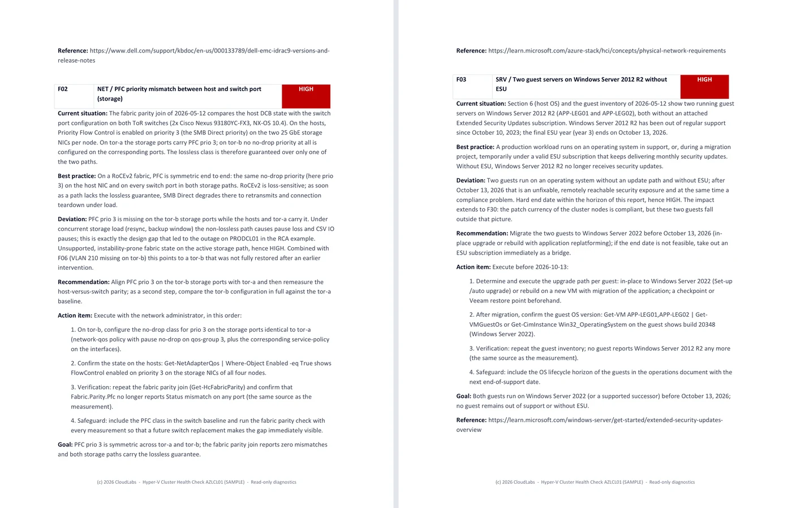
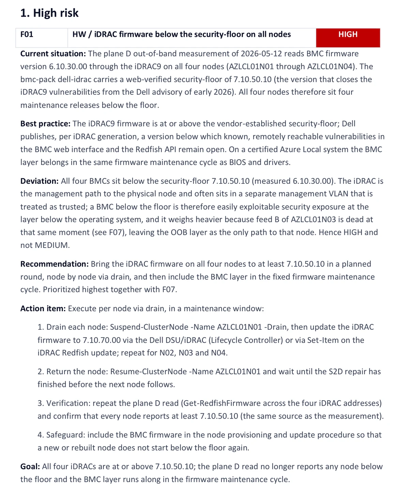

CloudLabs Health Check Toolchain v2 for Partners CloudLabs Health Check Toolchain v2 voor Partners
Every CloudLabs health check follows the same pattern: a tailored, read-only inventory script specifically built for the customer, run at the customer by the partner, processed in the CloudLabs Studio into documents a customer can act on. That toolchain is now in its second generation, and partners can run engagements on it for their own client base. Elke CloudLabs health check draait volgens hetzelfde patroon: een op maat gemaakt, read-only inventarisatiescript dat specifiek voor de klant is gebouwd, dat door de partner bij de klant wordt uitgevoerd en in de CloudLabs Studio wordt verwerkt tot documenten waar een klant concreet mee aan de slag kan. Die toolchain is inmiddels aan zijn tweede generatie toe, en partners kunnen er hun opdrachten op draaien bij hun eigen klantenkring.
What it isWat het is
The CloudLabs Health Check Toolchain v2 is a measurement chain, not a monitoring product. Nothing gets installed. A PowerShell script, built for the specific environment during a short intake, runs once with read-only credentials the customer provides. The results go to the CloudLabs Studio, where every data point is checked against a maintained catalogue of well over 150 distinct checks: Microsoft baselines, vendor firmware floors, fabric configuration rules, known failure patterns. De CloudLabs Health Check Toolchain v2 is een meetketen, geen monitoringproduct. Er wordt niets geïnstalleerd. Een PowerShell-script, tijdens een korte intake gebouwd voor de specifieke omgeving, draait één keer met read-only inloggegevens die de klant aanlevert. De resultaten gaan naar de CloudLabs Studio, waar elk gegeven wordt getoetst aan een up-to-date catalogus van ruim 150 afzonderlijke controles: Microsoft-baselines, security-floors van leveranciers, configuratieregels voor de fabric, bekende faalpatronen.
One thing the tooling never does is draw conclusions. It measures, compares and ranks; a specialist reads the evidence and writes the findings. Every finding states what was measured, what good looks like, how far the environment deviates, why the risk level is what it is, and a concrete action plan with verification steps. Where something was checked and found in order, the report says that too, so the customer can see exactly what was covered. Eén ding doet de tooling nooit: conclusies trekken. Ze meet, vergelijkt en rangschikt; een specialist leest de bewijzen en schrijft de bevindingen. Elke bevinding vermeldt wat er is gemeten, hoe de gewenste situatie eruitziet, hoever de omgeving daarvan afwijkt, waarom het risiconiveau is wat het is, en een concreet actieplan met verificatiestappen. Waar iets is gecontroleerd en in orde bevonden, vermeldt het rapport dat ook, zodat de klant precies kan zien wat er is nagekeken.


The engagementHet engagement
An engagement is not a single measurement but a twelve-month cycle around one unique cluster configuration. Ten clusters at one customer are ten engagements. Een engagement is geen losse meting maar een jaarcyclus rond een unieke clusterconfiguratie. Tien clusters bij een klant zijn tien engagements.
What an engagement covers:Wat een engagement omvat:
- A baseline measurement, in which the whole environment is recordedEen basismeting, waarin de volledige omgeving wordt vastgelegd
- Three follow-up measurements within twelve months, at moments you chooseDrie vervolgmetingen binnen twaalf maanden, af te spreken op momenten die u kiest
- A review of each of the four reports, remote or on siteDe bespreking van elk van de vier rapportages, remote of op locatie
- All reporting in the languages chosen at intake, which you can put into your own house styleAlle bijbehorende rapportage in de bij de intake gekozen talen, die u in uw eigen huisstijl kunt zetten
- Every update and new module that becomes available during the termAlle updates en nieuwe modules die tijdens de looptijd beschikbaar komen
The recommended cadence is a baseline at the start of the engagement and a follow-up each quarter after that. Engagements from a bundle are free to place across your whole client base; you decide at which customer and at what moment you start them. De aanbevolen cadans is een basismeting aan het begin van het engagement en daarna een vervolgmeting per kwartaal. Engagements uit een bundel zijn vrij inzetbaar over uw gehele klantenportefeuille; u bepaalt zelf bij welke klant en op welk moment u ze start.
A new engagement is needed, in consultation, when the environment has materially changed: different hardware, different addressing, or a changed role for the cluster. That calls for a new baseline, because a follow-up measurement cannot compare against an environment that no longer exists. Een nieuw engagement is nodig, in overleg, wanneer de omgeving materieel is gewijzigd: andere hardware, andere adressering of een gewijzigde inzet van het cluster. In dat geval is er een nieuwe basismeting nodig; een vervolgmeting kan niet vergelijken met een omgeving die niet meer bestaat.
What v2 measuresWat v2 meet
The first generation covered Windows Server, failover clustering and Hyper-V. Version 2 extends the reach to most of the modern datacenter stack. De eerste generatie dekte Windows Server, failover clustering en Hyper-V. Versie 2 breidt het bereik uit naar vrijwel de volledige moderne datacenterstack.
The baseline covers everything measurable from the cluster nodes themselves, in a single session, with no extra account, no extra network route and nothing to be supplied by a third party. It is the part the customer has to arrange least for, and the part most findings come out of. Everything beyond the nodes needs its own collector, its own authorisation or a route into another network: those are the modules. De basismeting dekt alles wat vanaf de clusternodes zelf te meten is, in een enkele sessie, zonder extra account, extra netwerkroute of aanlevering door een derde partij. Dit is het deel waar de klant het minste voor hoeft te regelen en waar de meeste bevindingen uit komen. Alles daarbuiten vraagt om een eigen collector, een aparte autorisatie of een route naar een ander netwerk: dat zijn de modules.
Windows Server & clustersWindows Server en clusters
Windows Server up to 2025, failover clustering, Hyper-V, Cluster-Aware Updating, live migration configuration, time service, patch currency, OS lifecycle including ESU exposure.Windows Server tot en met 2025, failover clustering, Hyper-V, Cluster-Aware Updating, live migration-configuratie, tijdservice, patchactualiteit, OS-levenscyclus inclusief ESU-blootstelling.
Azure Local & S2DAzure Local en S2D
Azure Local, HCI and Storage Spaces Direct: pool and virtual disk health, Network ATC intents, Arc connectivity, secured-core posture, failover headroom. Azure Migrate where relevant.Azure Local, HCI en Storage Spaces Direct: gezondheid van pool en virtuele schijven, Network ATC-intents, Arc-connectiviteit, secured-core-status, failovermarge. Azure Migrate waar relevant.
Server hardwareServerhardware
Dell, HPE and Lenovo, measured out-of-band through the BMC: firmware against verified security floors, power supply redundancy, hardware event logs, uniformity across nodes.Dell, HPE en Lenovo, out-of-band gemeten via de BMC: firmware tegen geverifieerde security-floors, redundantie van voedingen, hardware-eventlogs, uniformiteit tussen de nodes.
Storage arraysStorage arrays
Pure Storage, HPE, Dell and Lenovo arrays, read-only. Host-to-array symmetry: does what the array serves match what the hosts actually see.Arrays van Pure Storage, HPE, Dell en Lenovo, read-only. Symmetrie tussen host en array: komt wat de array aanbiedt overeen met wat de hosts daadwerkelijk zien.
Switch fabric & HBAsSwitch fabric en HBA's
Ethernet switches across several network operating systems, with host-versus-switch parity checks: PFC classes, VLAN trunks, the places where lossless RDMA quietly stops being lossless. Fibre Channel HBAs and fabrics as their own module: zoning, port state and path redundancy, plus the port counters that show a failing cable or SFP before it takes a path down.Ethernet-switches op diverse netwerkbesturingssystemen, met pariteitscontroles tussen host en switch: PFC-klassen, VLAN-trunks, de plekken waar lossless RDMA ongemerkt ophoudt lossless te zijn. Fibre Channel-HBA's en -fabrics als eigen module: zoning, poortstatus en padredundantie, plus de poorttellers die een falende kabel of SFP laten zien voordat er een pad uitvalt.
Management & backupBeheer en back-up
VMM, Windows Admin Center including WAC Virtualization Mode, Veeam and Commvault can all be taken into the measurement.VMM, Windows Admin Center inclusief WAC Virtualization Mode, Veeam en Commvault kunnen allemaal in de meting worden meegenomen.
Missing a module?Mist u een module?
Hardware or software your customer runs that is not listed here? Additional modules can usually be added at short notice.Hardware of software die uw klant gebruikt en die hier niet staat? Extra modules zijn meestal op korte termijn toe te voegen.
The modulesDe modules
Which modules apply follows from the intake, so you do not need to know in advance what you need: we derive it and put it to you before anything is measured. A module that is not taken, or not supplied, is not measured and appears in the report as an explicit limitation. Welke modules van toepassing zijn, volgt uit de intake. U hoeft dus niet vooraf te weten wat u nodig heeft: wij leiden het af en leggen het u voor voordat er iets wordt gemeten. Een module die niet wordt afgenomen of niet wordt aangeleverd, wordt niet gemeten en komt als expliciete beperking in de rapportage te staan.
CloudLabs logs in to nothing itself. Every module is read out on the side that owns that layer: the network, storage or backup administrator runs the collector for their own equipment, or fills in the checklist, and CloudLabs works from what comes back. That holds for all eleven, so the descriptions below say what a module measures and not who does the measuring. CloudLabs logt zelf nergens op in. Elke module wordt uitgelezen aan de kant die de laag beheert: de netwerk-, storage- of backupbeheerder draait het uitleesscript voor zijn eigen apparatuur, of vult de checklist in, en CloudLabs werkt met wat daaruit terugkomt. Dat geldt voor alle elf, dus de beschrijvingen hieronder zeggen wat een module meet en niet wie de meting doet.
- M1 Ethernet switchesEthernet-switches · The switch configuration next to what the hosts expect: VLANs, MTU, QoS and priority classes, port mode and uplink build. This is the module that proves the classic mismatches which are only visible as a symptom from the host, such as an MTU or priority class that does not carry through on the switch side and quietly drops RDMA back.De switchconfiguratie naast wat de hosts verwachten: VLAN’s, MTU, QoS en prioriteitsklassen, poortmodus en uplinkopbouw. Dit is de module die klassieke mismatches aantoont die vanaf de host alleen als symptoom zichtbaar zijn, zoals een MTU of prioriteitsklasse die aan de switchzijde niet doorloopt en RDMA stilletjes laat terugvallen.
- M2 Fibre Channel switchesFibre Channel-switches · Zoning, fabric build, port state and path redundancy, relevant only where the hosts reach their storage over Fibre Channel. Confirms that every path really runs separately and that the zoning matches the array’s host mappings.Zoning, fabricopbouw, poortstatus en padredundantie, alleen relevant waar de hosts hun opslag over Fibre Channel bereiken. Levert de bevestiging dat elk pad daadwerkelijk gescheiden loopt en dat de zoning aansluit op de hostmappings van het array.
- M3 Storage arrayStorage array · An inventory of the array itself: firmware and controllers, pools and LUNs, host mappings and path build, held against what the hosts see at their end. Health logs and a snapshot of the performance counters are read as standard.Inventarisatie van het array zelf: firmware en controllers, pools en LUN’s, hostmappings en padopbouw, getoetst tegen wat de hosts aan hun kant zien. Standaard worden ook de healthlogs en een momentopname van de prestatietellers meegelezen.
- M4 Out-of-band BMC (Redfish)Out-of-band BMC (Redfish) · Hardware state, firmware and BIOS level and settings the operating system does not show, read through iDRAC, iLO or XClarity. Also usable on a node that is not running at the time. The one thing the customer arranges is a route to the BMC network from the host where the script runs.Hardwarestatus, firmware- en BIOS-niveau en instellingen die het besturingssysteem niet laat zien, uitgelezen via iDRAC, iLO of XClarity. Ook bruikbaar bij een node die op dat moment niet meedraait. Het enige dat de klant regelt is een route naar het BMC-netwerk vanaf de host waar het script draait.
- M5 Azure control plane (ARM)Azure control plane (ARM) · The configuration on the Azure side: resources, networks, policies, roles and registration state. The customer runs a read-only collector with their own Azure account, so no identity is set up for CloudLabs here either.De configuratie aan de Azure-kant: resources, netwerken, policies, rollen en registratiestatus. De klant draait zelf een read-only collector-script met het eigen Azure-account, dus er wordt ook hier geen identiteit voor CloudLabs ingericht.
- M6 Azure MigrateAzure Migrate · The assessment data around migration readiness, read in the same session and with the same authorisation as M5. Gives the per-VM readiness verdict next to what actually runs on the cluster, including the differences between those two pictures.De assessmentgegevens rond migratiegereedheid, gelezen in dezelfde sessie en met dezelfde autorisatie als M5. Levert de gereedheidsbeoordeling per VM naast wat er werkelijk op het cluster draait, inclusief de verschillen tussen die twee beelden.
- M7 Performance chain analysisPrestatieanalyse keten · The module that makes connections visible. Over an agreed window three layers are put on one timeline: the operating system counters, the switch counters and the array counters. It proves what separate measurements only suggest. Only meaningful in combination: M3 plus M1 or M2, over a window of at least twenty-four hours in which all three layers measure at once.De module die verbanden zichtbaar maakt. Over een afgesproken meetvenster worden drie lagen op een gemeenschappelijke tijdlijn gelegd: de tellers vanuit het besturingssysteem, de switchtellers en de arraytellers. Daarmee wordt aantoonbaar wat losse metingen alleen suggereren. Alleen zinvol in combinatie: M3 plus M1 of M2, over een meetvenster van minimaal vierentwintig uur waarin alle drie de lagen tegelijk meten.
- M8 Data protection and management layersDataprotectie en beheerlagen · The substantive assessment of VMM, Windows Admin Center, Veeam and Commvault, beyond the presence check in the baseline. Does the backup job really cover every VM on the cluster, are restore points verified, does retention match the policy.De inhoudelijke beoordeling van VMM, Windows Admin Center, Veeam en Commvault, voorbij de aanwezigheidscontrole uit de basismeting. Dekt de backupjob daadwerkelijk elke VM die op het cluster draait, worden herstelpunten geverifieerd, sluit de retentie aan op het beleid.
- M9 System documentationSysteemdocumentatie · The full build of the environment recorded as a standalone document: nodes and roles, cluster and network build, volumes and storage paths, firmware baseline and the relevant settings. Built from the measurement data, so nothing extra has to be supplied.De volledige inrichting van de omgeving vastgelegd als zelfstandig document: nodes en rollen, cluster- en netwerkopbouw, volumes en opslagpaden, firmware-baseline en de relevante configuratie-instellingen. Opgebouwd uit de meetgegevens, dus zonder aanvullende aanlevering door de klant.
- M10 Interview findingsInterviewbevindingen · A structured conversation with the administrators about what no measurement can show: recovery from the loss of a node, a site or the whole cluster; how current and findable the documentation is; how knowledge is spread and handed over; and the maintenance rhythm. A recovery procedure written two years ago and never tested counts as absent.Een gestructureerd gesprek met de beheerders over wat geen enkele meting kan laten zien: herstel bij uitval van een node, een locatie of het hele cluster; de actualiteit en vindbaarheid van de documentatie; de spreiding van kennis en de geregelde overdracht; en het onderhoudsritme. Een herstelprocedure die twee jaar geleden is geschreven en nooit is beproefd, telt als afwezig.
- M11 Custom module on requestMaatwerkmodule op aanvraag · The toolchain does not cover every layer you meet at a customer. Where a module is missing, CloudLabs can build one: scope and a quotation with a ceiling first, then built and proven in the first engagement it runs in.De toolchain dekt niet elke laag die u bij een klant tegenkomt. Waar een module ontbreekt, kan CloudLabs er een bouwen: eerst de scope en een offerte met een plafond, daarna gebouwd en beproefd in het eerste engagement waarin hij draait.
The documentsDe documenten
An engagement produces four document types, with a fifth available on call. Every page below is real output from the sample engagement, click to view full size. Een opdracht levert vier documenttypes op, met een vijfde op afroep. Elke pagina hieronder is echte output uit de voorbeeldopdracht, klik om op volledige grootte te bekijken.
Findings reportBevindingen-rapport
The first measurement. Full findings with risk analysis: executive summary, a findings table graded CRITICAL, HIGH, MEDIUM and LOW, a register of what was checked and found in order, and prioritised recommendations. The summary table gives management the whole picture on one page; the chapters behind it give the engineers the detail. Findings reference each other where risks interact: a dead power feed on one node raises the weight of a firmware finding on that same node, and the report says so. The register also separates not measured from in order, so a clean section is a claim backed by evidence, never an assumption. De eerste meting. Volledige bevindingen met risicoanalyse: managementsamenvatting, een bevindingen-tabel met de gradaties KRITIEK, HOOG, MIDDEL en LAAG, een register van wat is gecontroleerd en in orde bevonden, en geprioriteerde aanbevelingen. De overzichtstabel geeft het management het hele beeld op één pagina; de hoofdstukken erachter geven de engineers de details. Bevindingen verwijzen naar elkaar waar risico's op elkaar inwerken: een uitgevallen voeding op een node verzwaart een firmware-bevinding op diezelfde node, en het rapport vermeldt dat. Het register scheidt bovendien niet gemeten van in orde, zodat een schone sectie een bewering is die door bewijs wordt gedekt, nooit een aanname.


Delta reportDelta-rapport
After each follow-up measurement: what was resolved, what stayed open, what is new. Resolved findings are verified by measurement, not by ticket status; a finding only turns green when the follow-up run proves the fix. This is the document that keeps you at the table between measurements. The register keeps the full history per finding: when it was first seen, what changed in between, and which measurement proved it resolved. New findings that surface between measurements, like a pending reboot left behind by a patch round, join the same register with their own trail. Na elke vervolgmeting: wat is opgelost, wat is blijven staan, wat is nieuw. Opgeloste bevindingen worden geverifieerd door meting, niet door ticketstatus; een bevinding wordt pas groen wanneer de vervolgmeting de oplossing aantoont. Dit is het document dat u tussen de metingen door aan tafel houdt. Het register houdt de volledige geschiedenis per bevinding bij: wanneer die voor het eerst is gezien, wat er tussentijds is veranderd, en welke meting heeft aangetoond dat die is opgelost. Nieuwe bevindingen die tussen twee metingen opduiken, zoals een openstaande herstart die een patchronde heeft achtergelaten, komen in hetzelfde register terecht met hun eigen spoor.


Remaining-risk reportRestrisico-rapport
The open risks that still need attention, with a trend chart showing the progression across measurements. The left panel shows the distribution per measurement, the right panel the trend per risk level: in the sample engagement HIGH falls from 3 via 1 to 0 across three measurements, while the resolved count climbs to 12. Every finding on that green line was verified by measurement, not by reported status. Tangible proof of work done, in a form a customer can put in front of management, an auditor or a cyber insurer. De openstaande risico's die nog aandacht vragen, met een risico-trend grafiek die het verloop over de metingen laat zien. Het linkerpaneel toont de verdeling per meting, het rechterpaneel de trend per risiconiveau: in de voorbeeldopdracht daalt HOOG over drie metingen van 3 via 1 naar 0, terwijl het aantal opgeloste bevindingen oploopt tot 12. Elke bevinding op die groene lijn is geverifieerd door meting, niet door gerapporteerde status. Tastbaar bewijs van verricht werk, in een vorm die een klant kan voorleggen aan het management, een auditor of een cyberverzekeraar.


As-Built documentationAs-built-documentatie
Current system documentation, generated from the latest measurement: identity, hardware, storage, network, cluster, virtual machines, management and backup, down to firmware levels and VLAN tables. Always in sync with reality, because it is derived from reality. It comes in two tiers: Basic covers host and OS, Complete folds in the array, fabric and physical-intake chapters. Because it is regenerated with every measurement, documentation drift disappears: a replaced switch, an extra VLAN or a new node simply shows up in the next version. Actuele systeemdocumentatie, gegenereerd uit de laatste meting: identiteit, hardware, storage, netwerk, cluster, virtuele machines, beheer en back-up, tot en met firmwareniveaus en VLAN-tabellen. Altijd in overeenstemming met de werkelijkheid, omdat ze uit de werkelijkheid is afgeleid. Ze komt in twee niveaus: Basic dekt host en OS, Complete voegt de hoofdstukken voor array, fabric en fysieke intake toe. Omdat ze bij elke meting opnieuw wordt gegenereerd, verdwijnt documentatiedrift: een vervangen switch, een extra VLAN of een nieuwe node verschijnt gewoon in de volgende versie.


Root Cause Analysis, on callRoot Cause Analysis, op afroep
After a crash or serious incident: a standard measurement plus a read-only incident harvest, folded into a cross-node timeline. The analysis names the most likely cause, shows the alternatives that were weighed and rejected, and states its own evidence gaps. RCAs are handled with priority: same day or the next working day. The cluster log is collected only with explicit consent, and the detectors rank hypotheses, they never conclude: the written analysis is authored by a specialist, like every document in this chain. Where evidence is missing, the report says so instead of papering over it. Na een crash of ernstig incident: een standaardmeting plus een read-only incidentoogst, samengebracht in een tijdlijn over alle nodes heen. De analyse benoemt de meest waarschijnlijke oorzaak, toont de alternatieven die zijn afgewogen en verworpen, en vermeldt de eigen hiaten in het bewijs. RCA's worden met prioriteit behandeld: dezelfde dag of de eerstvolgende werkdag. De clusterlog wordt alleen met uitdrukkelijke toestemming verzameld, en de detectoren rangschikken hypothesen, ze concluderen nooit: de geschreven analyse is opgesteld door een specialist, zoals elk document in deze keten. Waar bewijs ontbreekt, vermeldt het rapport dat, in plaats van het toe te dekken.


All reporting is delivered in Dutch or English. The language is fixed at intake and holds for the whole engagement. Delivery is in the CloudLabs standard layout, in an editable format: if you want to hand the report to the customer in your own house style or theirs, you apply that layout yourself. We deliver the content, you decide the form. Alle rapportage wordt in het Nederlands of het Engels opgeleverd. De taal wordt bij de intake vastgelegd en geldt voor het hele engagement. Oplevering vindt plaats in de standaardopmaak van CloudLabs, in een bewerkbaar formaat. Wilt u het rapport in uw eigen huisstijl of die van de klant overhandigen, dan past u die opmaak zelf toe. Wij leveren de inhoud, u bepaalt de vorm.
Solving the findings is yours. You do it at your own customer and on your own terms. CloudLabs stays available in the background for technical support, remote or on site; those hours fall outside the engagement and are billed on actuals. Het oplossen van de bevindingen doet u zelf, bij uw eigen klant en op uw eigen voorwaarden. CloudLabs blijft daarbij op de achtergrond beschikbaar voor technische ondersteuning, remote of op locatie. Die uren vallen buiten het engagement en worden op nacalculatie afgerekend.
How an engagement runsHoe een opdracht verloopt
Intake
A short session to pin down scope and the specifics of the environment. The result is an inventory script built for exactly that configuration.Een korte sessie om de scope en de bijzonderheden van de omgeving vast te leggen. Het resultaat is een inventarisatiescript dat precies voor die configuratie is gebouwd.
SupplyAanlevering
Per module the administrator concerned gets their own instruction card with the checklist or the command that runs at their end. Vendor details, endpoints and switch names are asked there, of the administrator who has the answer.Per module krijgt de betreffende beheerder een eigen instructiekaart met de checklist of het commando dat aan zijn kant gedraaid wordt. Leveranciersgegevens, endpoints en switchnamen worden daar uitgevraagd, bij de beheerder die het antwoord heeft.
MeasurementMeting
You run the script at your customer, independently. It executes read-only commands with an account the customer provides. Switches, storage arrays and Azure ARM may need additional read-only accounts.U draait het script zelfstandig bij uw klant. Het voert read-only commando's uit met een account dat de klant aanlevert. Voor switches, storage arrays en Azure ARM kunnen aanvullende read-only accounts nodig zijn.
Processing and deliveryVerwerking en oplevering
The result files go into the CloudLabs Studio and come back as finished documents, normally within three to five working days. Processing happens on a hosted server in the Netherlands; the data stays within Dutch jurisdiction.De resultaatbestanden gaan de CloudLabs Studio in en komen terug als afgeronde documenten, normaal gesproken binnen drie tot vijf werkdagen. De verwerking gebeurt op een gehoste server in Nederland; de data blijft binnen de Nederlandse jurisdictie.
Review and follow-up measurementsBespreking en vervolgmetingen
You and CloudLabs present the report to the customer together. The findings are then worked down by the customer and you, with CloudLabs on call for the specialist parts. Three follow-up measurements run within the twelve months of the engagement, preferably one a quarter; the toolchain keeps producing the evidence of progress.U en CloudLabs presenteren het rapport samen aan de klant. De bevindingen worden vervolgens door de klant en u afgewerkt, met CloudLabs op afroep voor de specialistische delen. Binnen de twaalf maanden van het engagement volgen drie vervolgmetingen, bij voorkeur per kwartaal; de toolchain blijft het bewijs van voortgang leveren.
Your customer stays your customer. CloudLabs never approaches your customer without you, unless you explicitly ask for it. CloudLabs expertise is available to you and to the customer throughout the engagement. Uw klant blijft uw klant. Wij benaderen uw klant nooit zonder u, tenzij u daar uitdrukkelijk om vraagt. De expertise van CloudLabs staat gedurende de hele opdracht tot uw beschikking en die van de klant.
A worked example: NoorderlichtEen uitgewerkt voorbeeld: Noorderlicht
Noorderlicht B.V. is not a real customer. It is a fictional environment, built specifically so the toolchain's output can be shown without exposing anyone's production data. The documents themselves are real: the same pipeline, the same house style, the same rules as a paying engagement. Below is one finding from the baseline report, in full. This is the level of detail every finding carries: the measured situation with versions and dates, the best practice with its source, the deviation and why it earns this risk level, and an action plan an engineer can execute, including the verification that closes the loop. Noorderlicht B.V. is geen echte klant. Het is een fictieve omgeving, speciaal gebouwd zodat de output van de toolchain getoond kan worden zonder iemands productiedata prijs te geven. De documenten zelf zijn echt: dezelfde pipeline, dezelfde huisstijl, dezelfde regels als bij een betaalde opdracht. Hieronder staat één bevinding uit het Bevindingen-rapport, volledig uitgewerkt. Dit is het detailniveau dat elke bevinding meedraagt: de gemeten situatie met versies en datums, de best practice met de bron ervan, de afwijking en waarom die dit risiconiveau krijgt, en een actieplan dat een engineer kan uitvoeren, inclusief de verificatie die het geheel afrondt.


AZLCL01: baseline and two follow-upsAZLCL01: basismeting en twee vervolgmetingen
A four-node Azure Local cluster: all-flash S2D, 25 GbE RoCE storage network, out-of-band hardware measurement, switch fabric and interview evidence included. Baseline in May 2026: 33 findings, of which 1 CRITICAL, 3 HIGH, 11 MEDIUM and 6 LOW, and 12 items checked and found in order. Een Azure Local-cluster met vier nodes: all-flash S2D, 25 GbE RoCE-storagenetwerk, out-of-band hardwaremeting, switch fabric en interviewbewijs inbegrepen. Basismeting in mei 2026: 33 bevindingen, waarvan 1 KRITIEK, 3 HOOG, 11 MIDDEL en 6 LAAG, en 12 punten gecontroleerd en in orde bevonden.
PRODCL01: root cause analysis of a Saturday outagePRODCL01: root cause analysis van een storing op zaterdag
A six-node S2D cluster lost a CSV on a Saturday afternoon; 14 VMs restarted. The RCA reconstructed the chain from cross-node event evidence: a switch had been replaced two days earlier and its lossless storage configuration was never restored. Under combined backup and repair traffic, storage I/O timed out and a node was evicted. Een S2D-cluster met zes nodes verloor op een zaterdagmiddag een CSV; 14 VM's herstartten. De RCA reconstrueerde de keten uit eventbewijs over alle nodes heen: twee dagen eerder was een switch vervangen en de lossless storageconfiguratie ervan was nooit hersteld. Onder de gecombineerde back-up- en herstelbelasting liep storage-I/O in een time-out en werd een node uit het cluster verwijderd.
Where partners use itWaar partners het inzetten
Hardware refresh or new Azure Local buildHardware refresh of nieuwe Azure Local-implementatie
A measurement before and after the project proves, objectively, that the new environment was delivered to best practice.Een nulmeting en eindmeting rond het project bewijzen objectief dat de nieuwe omgeving volgens best practice is opgeleverd.
After a VMware migrationNa een VMware-migratie
Before the new clusters go into production: were all best practices applied, and what still needs doing first.Voordat de nieuwe clusters in productie gaan: zijn alle best practices toegepast, en wat moet er eerst nog gebeuren.
Onboarding a managed customerOnboarding van een beheerklant
Know exactly what you are taking into management, with current as-built documentation and a clear picture of the open risks from day one.Weet precies wat u in beheer neemt, met actuele as-built-documentatie en vanaf dag één een helder beeld van de openstaande risico's.
Inside the managed services contractBinnen het beheercontract
The health check as a recurring service, with the progress chart as tangible proof of quality delivered.De health check als terugkerende dienst, met de risico-trend grafiek als tastbaar bewijs van geleverde kwaliteit.
Compliance and auditCompliance en audit
Repeatable, evidence-based measurements that hold up towards NIS2, ISO 27001 and cyber insurers.Herhaalbare, op bewijs gebaseerde metingen die standhouden richting NIS2, ISO 27001 en cyberverzekeraars.
Due diligence
Mergers, acquisitions, or taking over a customer from another supplier: a fast, objective picture of the state of the infrastructure.Fusies, overnames, of het overnemen van een klant van een andere leverancier: een snel, objectief beeld van de staat van de infrastructuur.
AgreementsAfspraken
- CloudLabs collects read-only. No changes are made in the customer environment, and no traffic or workload is generated. The collectors run at the customer or the partner. CloudLabs receives no passwords and has no access to the environment.CloudLabs verzamelt read-only. Er worden geen wijzigingen aangebracht in de omgeving van de klant, en er wordt geen verkeer of werklast gegenereerd. De collector-scripts worden aan de kant van de klant of de partner gedraaid. CloudLabs ontvangt geen wachtwoorden en heeft geen toegang tot de omgeving.
- Follow-up measurements cover the baseline as standard. Re-measuring a module is possible at the applicable module rate.Vervolgmetingen dekken standaard de basismeting. Een module opnieuw meten kan tegen het geldende moduletarief.
- The review of each of the four reports is included in the engagement, reckoned at about an hour per report, remote or on site. If a review runs substantially longer, the excess is billed hourly.De bespreking van elk van de vier rapportages is in het engagement inbegrepen, gerekend op ongeveer een uur per rapportage, remote of op locatie. Loopt een bespreking substantieel langer uit, dan wordt het meerdere op uurbasis afgerekend.
- Remediation hours fall outside the engagement. Guidance during repair, hands-on work and incident analysis are billed hourly, remote or on site. Travel and accommodation for on-site work are charged separately.Oplosuren vallen buiten het engagement. Begeleiding bij herstel, meewerken aan de uitvoering en incidentanalyse worden op uurbasis afgerekend, ongeacht of dat remote of op locatie gebeurt. Reis- en verblijfkosten bij werk op locatie worden apart in rekening gebracht.
- Taking engagements, in bundles or otherwise, is non-exclusive. No territory, market segment or customer group is reserved for a partner, and CloudLabs remains free to deliver the same service to others. The same holds for modules built at a partner’s request.Afname van engagements, ook in bundelvorm, is niet-exclusief. Er wordt geen gebied, marktsegment of klantgroep aan een partner voorbehouden en CloudLabs blijft vrij dezelfde dienst aan andere partners te leveren. Hetzelfde geldt voor modules die in opdracht van een partner zijn gebouwd.
Rates and the intake and billing codes are available on request, together with the note on how the collector handles credentials. Ask for them with the partner briefing below. De tarieven en de codering voor intake en facturatie zijn op aanvraag beschikbaar, samen met de toelichting op hoe de collector met inloggegevens omgaat. Vraag ze op bij de partnerbriefing hieronder.
Interested?Interesse?
Get in touch for the partner briefing: the full Noorderlicht sample set, a walkthrough of the process, and the commercial terms, including what is in it for you. Neem contact op voor de partnerbriefing: de volledige Noorderlicht-voorbeeldset, een toelichting op het proces, en de commerciële voorwaarden, inclusief wat het u oplevert.